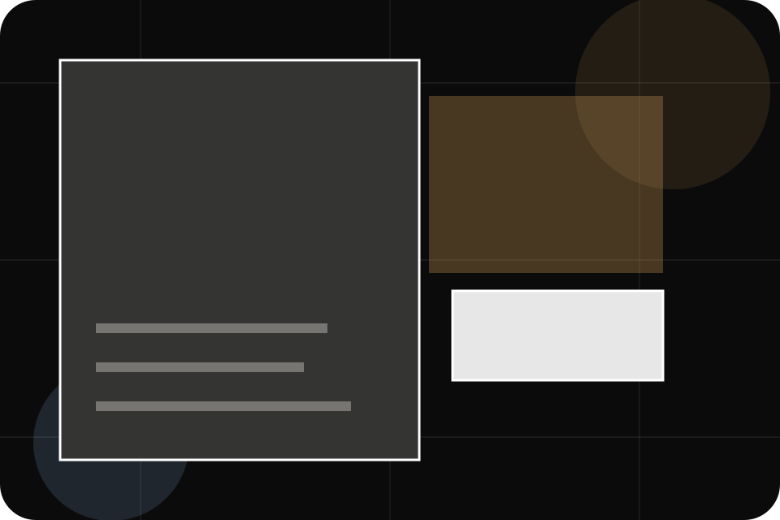
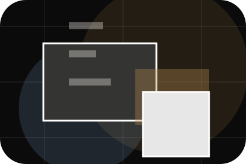
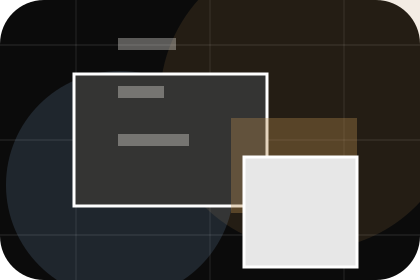
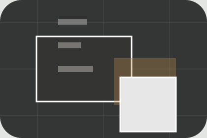

Context
Regions gives the page a specific angle instead of repeating the navigation label.
Places / 01
Places opens as a clear travel decision hub: what Atlas offers, who it helps, why it matters, and which route to take first.
The first screen combines positioning, proof, primary action, and fast internal navigation, so people can act immediately or compare the rest of the places route with context.
Immersive trip hero
Select the closest route and Atlas keeps the next step, proof, and follow-up expectation aligned with wanderlust and practical planning.

Places / 02
Destinations adds editorial context to the places route, using the dark destination magazine structure to support wanderlust and practical planning before visitors choose a next step.
Atlas uses journey story cards and focused copy to make the decision easier to scan, aligning the section with wanderlust and practical planning rather than filling space.
Explore PlacesDestinations gives the page a specific angle instead of repeating the navigation label.
The journey story cards show what to compare, what to avoid, and what matters most for travel, tourism & destination experiences visitors.
The final cue points to a useful internal route so the section keeps the journey moving.
Places / 03
Regions adds editorial context to the places route, using the dark destination magazine structure to support wanderlust and practical planning before visitors choose a next step.
Atlas uses journey story cards and focused copy to make the decision easier to scan, aligning the section with wanderlust and practical planning rather than filling space.
Explore PlacesRegions gives the page a specific angle instead of repeating the navigation label.
The journey story cards show what to compare, what to avoid, and what matters most for travel, tourism & destination experiences visitors.
The final cue points to a useful internal route so the section keeps the journey moving.
Places / 04
Highlights adds editorial context to the places route, using the dark destination magazine structure to support wanderlust and practical planning before visitors choose a next step.
Atlas uses journey story cards and focused copy to make the decision easier to scan, aligning the section with wanderlust and practical planning rather than filling space.
Explore Places

Highlights gives the page a specific angle instead of repeating the navigation label.
Places / 05
Seasons adds editorial context to the places route, using the dark destination magazine structure to support wanderlust and practical planning before visitors choose a next step.
Atlas uses journey story cards and focused copy to make the decision easier to scan, aligning the section with wanderlust and practical planning rather than filling space.
Explore PlacesSeasons gives the page a specific angle instead of repeating the navigation label.
The journey story cards show what to compare, what to avoid, and what matters most for travel, tourism & destination experiences visitors.
The final cue points to a useful internal route so the section keeps the journey moving.
Places / 06
Maps adds editorial context to the places route, using the dark destination magazine structure to support wanderlust and practical planning before visitors choose a next step.
Atlas uses journey story cards and focused copy to make the decision easier to scan, aligning the section with wanderlust and practical planning rather than filling space.
Explore PlacesMaps gives the page a specific angle instead of repeating the navigation label.
The journey story cards show what to compare, what to avoid, and what matters most for travel, tourism & destination experiences visitors.
The final cue points to a useful internal route so the section keeps the journey moving.
Places / 07
Notes adds editorial context to the places route, using the dark destination magazine structure to support wanderlust and practical planning before visitors choose a next step.
Atlas uses journey story cards and focused copy to make the decision easier to scan, aligning the section with wanderlust and practical planning rather than filling space.
Explore PlacesAtlas structures notes around context, judgment, and a clear next route so visitors can compare the block quickly before they plan a trip.
Plan TripPlaces / 10
Atlas closes the places route with a clear action, a quick reminder of the value, and a low-friction way to plan a trip.
Visitors who are ready can use the primary action. Visitors who are still comparing can scan the section links, proof, and support routes before they plan a trip.
Plan TripThe final block keeps the choice simple: act now, compare one more proof route, or send enough detail for a focused response.
Plan Tripwanderlust and practical planning
A travel-planning site with dark editorial hero, trip story cards, itinerary accordions, and bespoke enquiry. Places ends with a direct path to plan a trip, plus enough context for visitors who still need to compare.

Plan TripTravel plans may depend on visas, health rules, weather, operator availability, and insurance terms.